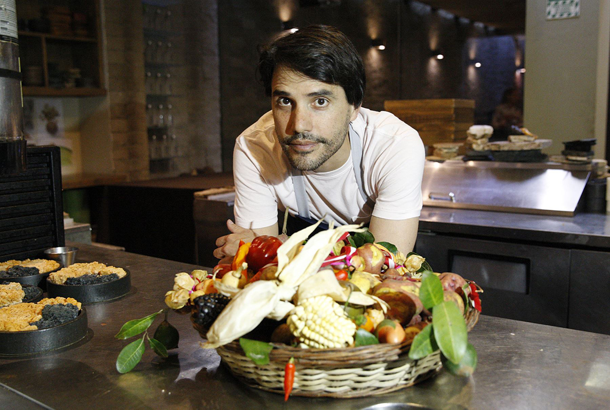

Andy Guzman

Peru-Lima
Todos recordamos un plato, un entrante o un pastel que hace volar a nuestras papilas gustativas. Podemos recordar la textura, el sabor y el aspecto de ese plato. Un simple olor es suficiente para revivir esa emoción. Por ejemplo, al oler las tostadas por la mañana y disfrutar del sabor de la mantequilla caliente y la mermelada dulce en el pan crujiente…